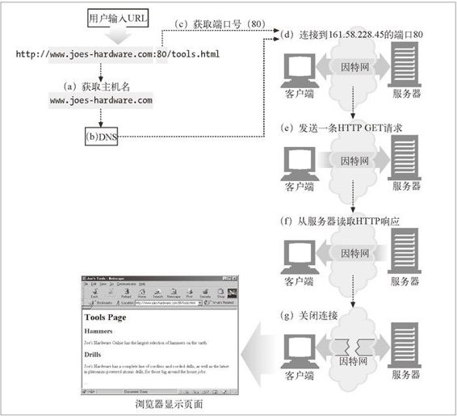

1.6 连接
概要介绍了 HTTP 报文的构成之后，我们来讨论一下报文是如何通过传输控制协议（Transmission Control Protocol，TCP）连接从一个地方搬移到另一个地方去的。
1.6.1 TCP/IP
HTTP 是个应用层协议。HTTP 无需操心网络通信的具体细节；它把联网的细节都交给了通用、可靠的因特网传输协议 TCP/IP。
TCP 提供了：
无差错的数据传输；
按序传输（数据总是会按照发送的顺序到达）；
未分段的数据流（可以在任意时刻以任意尺寸将数据发送出去）。
因特网自身就是基于 TCP/IP 的，TCP/IP 是全世界的计算机和网络设备常用的层次化分组交换网络协议集。TCP/IP 隐藏了各种网络和硬件的特点及弱点，使各种类型的计算机和网络都能够进行可靠地通信。
只要建立了 TCP 连接，客户端和服务器之间的报文交换就不会丢失、不会被破坏，也不会在接收时出现错序了。
用网络术语来说，HTTP 协议位于 TCP 的上层。HTTP 使用 TCP 来传输其报文数据。与之类似，TCP 则位于 IP 的上层（参见图 1-9）。
图 1-9 HTTP 网络协议栈
1.6.2 连接、IP地址及端口号
在 HTTP 客户端向服务器发送报文之前，需要用网际协议（Internet Protocol，IP）地址和端口号在客户端和服务器之间建立一条 TCP/IP 连接。
建立一条 TCP 连接的过程与给公司办公室的某个人打电话的过程类似。首先，要拨打公司的电话号码。这样就能进入正确的机构了。其次，拨打要联系的那个人的分机号。
在 TCP 中，你需要知道服务器的 IP 地址，以及与服务器上运行的特定软件相关的 TCP 端口号。
这就行了，但最初怎么获得 HTTP 服务器的 IP 地址和端口号呢？当然是通过 URL 了！我们前面曾提到过，URL 就是资源的地址，所以自然能够为我们提供存储资源的机器的 IP 地址。我们来看几个 URL：
http://207.200.83.29:80/index.html
http://www.netscape.com:80/index.html
http://www.netscape.com/index.html
第一个 URL 使用了机器的 IP 地址，207.200.83.29 以及端口号 80。
第二个 URL 没有使用数字形式的 IP 地址，它使用的是文本形式的域名，或者称为主机名（www.netscape.com）。主机名就是 IP 地址比较人性化的别称。可以通过一种称为域名服务（Domain Name Service，DNS）的机制方便地将主机名转换为 IP 地址，这样所有问题就都解决了。第 2 章会介绍更多有关 DNS 和 URL 的内容。
最后一个 URL 没有端口号。HTTP 的 URL 中没有端口号时，可以假设默认端口号是 80。
有了 IP 地址和端口号，客户端就可以很方便地通过 TCP/IP 进行通信了。图 1-10 显示了浏览器是怎样通过 HTTP 显示位于远端服务器中的某个简单 HTML 资源的。

图 1-10 基本的浏览器连接处理
步骤如下：
(a) 浏览器从 URL 中解析出服务器的主机名；
(b) 浏览器将服务器的主机名转换成服务器的 IP 地址；
(c) 浏览器将端口号（如果有的话）从 URL 中解析出来；
(d) 浏览器建立一条与 Web 服务器的 TCP 连接；
(e) 浏览器向服务器发送一条 HTTP 请求报文；
(f) 服务器向浏览器回送一条 HTTP 响应报文；
(g) 关闭连接，浏览器显示文档。
1.6.3 一个使用Telnet的实例
由于 HTTP 使用了 TCP/IP 传输协议，而且它是基于文本的，没有使用那些难以理解的二进制格式，因此很容易直接与 Web 服务器进行对话。
Telnet 程序可以将键盘连接到某个目标 TCP 端口，并将此 TCP 端口的输出回送到显示屏上。Telnet 常用于远程终端会话，但它几乎可以连接所有的 TCP 服务器，包括 HTTP 服务器。
可以通过 Telnet 程序直接与 Web 服务器进行对话。通过 Telnet 可以打开一条到某台机器上某个端口的 TCP 连接，然后直接向那个端口输入一些字符。Web 服务器会将 Telnet 程序作为一个 Web 客户端来处理，所有回送给 TCP 连接的数据都会显示在屏幕上。
我们用 Telnet 与一个实际的 Web 服务器进行交互。我们要用 Telnet 获取 URL http://www.joes-hardware.com:80/tools.html 所指向的文档（你可以自己尝试一下这个实例）。
我们来看看会发生什么情况。
首先，查找 www.joes-hardware.com 的 IP 地址，打开一条到那台机器端口 80 的 TCP 连接。Telnet 会为我们完成那些“跑腿儿”的工作。
一旦打开了 TCP 连接，就要输入 HTTP 请求了。
请求结束（由一个空行表示）之后，服务器会在一条 HTTP 响应中将内容回送并关闭连接。
例 1-1 显示了对 http://www.joes-hardware.com:80/tools.html 的 HTTP 请求实例。我们输入的内容用粗体字表示。
例 1-1 一个使用 Telnet 的 HTTP 事务
% telnet www.joes-hardware.com 80
Trying 161.58.228.45...
Connected to joes-hardware.com.
Escape character is '^]'.
GET /tools.html HTTP/1.1
Host: www.joes-hardware.com
HTTP/1.1 200 OK
Date: Sun, 01 Oct 2000 23:25:17 GMT
Server: Apache/1.3.11 BSafe-SSL/1.38 (Unix) FrontPage/4.0.4.3
Last-Modified: Tue, 04 Jul 2000 09:46:21 GMT
ETag: "373979-193-3961b26d"
Accept-Ranges: bytes
Content-Length: 403
Connection: close
Content-Type: text/html
<HTML>
<HEAD><TITLE>Joe's Tools</TITLE></HEAD>
<BODY>
<H1>Tools Page</H1>
<H2>Hammers</H2>
<P>Joe's Hardware Online has the largest selection of hammers on the
earth.</P>
<H2><A NAME=drills></A>Drills</H2>
<P>Joe's Hardware has a complete line of cordless and corded drills,
as well as the latest
in plutonium-powered atomic drills, for those big around the house
jobs.</P> ...
</BODY>
</HTML>
Connection closed by foreign host.
Telnet 会查找主机名并打开一条连接，连接到在 www.joes-hardware.com 的端口 80 上监听的 Web 服务器。这条命令之后的三行内容是 Telnet 的输出，告诉我们它已经建立了连接。
然后我们输入最基本的请求命令 GET/tools.html HTTP/1.1，发送一个提供了源端主机名的 Host 首部，后面跟上一个空行，请求从服务器 www.joes-hardware.com 上获取资源 tools.html。随后，服务器会以一个响应行、几个响应首部、一个空行和最后面的 HTML 文档主体来应答。
要明确的是，Telnet 可以很好地模拟 HTTP 客户端，但不能作为服务器使用。而且对 Telnet 做脚本自动化是很繁琐乏味的。如果想要更灵活的工具，可以去看看 nc （netcat）。通过 nc 可以很方便地操纵基于 UDP 和 TCP 的流量（包括 HTTP），还可以为其编写脚本。更多细节参见 http://www.bgw.org/tutorials/utilities/nc.php1。
1.该链接已失效，读者可以访问http://en.wikipedia.org/wiki/Netcat。（编者注）